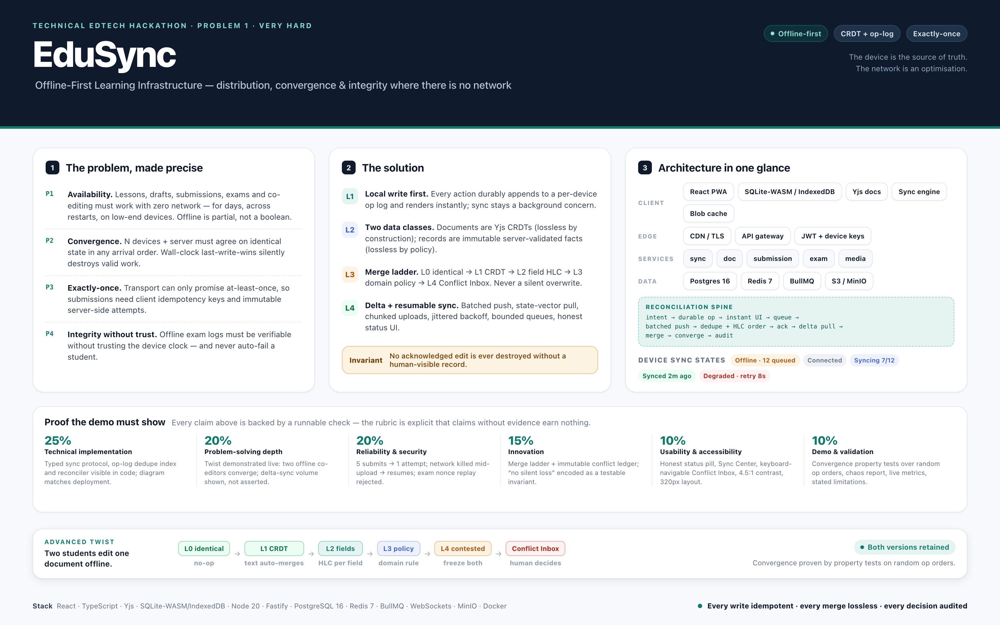
A normal LMS is a thin client over a server database: every read is an API call, every write is a server transaction. Remove the network and you get three failures — dead UI, lost writes, and divergent copies of the truth. EduSync inverts that: the device is the source of truth and the network is an optimisation. Every user action is durably recorded locally in an append-only, HLC-ordered operation log; documents are Yjs CRDTs so concurrent edits merge losslessly; records (submissions, grades, exam sessions) are immutable server-validated facts keyed by client-generated idempotency IDs so retries can never duplicate them. Sync is a resumable, back-pressured state machine that pushes coalesced batches and pulls deltas by state vector. When merge is genuinely impossible, both versions are frozen and surfaced in a Conflict Inbox for a human decision — so the brief's advanced twist ("reconcile conflicting edits without silently losing valid work") becomes a testable invariant, not a hope.
A distributed learning platform that lets students access lessons, submit assignments, take examinations and collaborate when internet access is unavailable, and that synchronises data reliably across devices once connectivity returns. The deck lists six challenges: offline-first architecture with local persistence; conflict-aware sync across devices; background sync queues with retries and idempotent operations; distributed file storage and versioning; real-time collaboration when connectivity is restored; data integrity and duplicate-submission prevention. The twist: two students edit the same shared document offline, and on reconnect both edits must be reconciled without silent data loss.
The innocent phrase "access lessons when internet is unavailable" hides the whole difficulty. Offline-first is not "cache the API responses." It is a distributed-systems problem wearing an education costume: multiple replicas (one per device, plus one per server node) with no reliable clock, no reliable ordering, and an unreliable message channel — and the product requirement that they converge to the same truth with zero loss of acknowledged work.
That decomposes into five problems that constrain each other:
| # | Problem | What breaks with a naive build | What it really demands |
|---|---|---|---|
| P1 | Availability | UI blocks on I/O; a dropped request loses a draft | Durable local persistence (records and documents), instant local writes, cache/eviction policy, and a UI that never waits on the network. Offline is partial (2G, captive portals, background throttling), not a boolean. |
| P2 | Convergence | Wall-clock last-write-wins silently deletes one side | Causality without trusted clocks (HLC), commutative merge for text, a deterministic and auditable answer for scalars, and an exit hatch when no automatic rule is valid. |
| P3 | Exactly-once effects | Retry storm produces 3 submissions; double-click produces 2 attempts | At-least-once transport + client-generated idempotency keys + immutable server attempts + a unique index as the dedupe authority. |
| P4 | Integrity without trust | Offline exam answers are unverifiable; device clock is trivially changed | Signed, sealed exam packages; monotonic timing anchored to a signed server timestamp; a tamper-evident hash-chained answer log; server-side verification that flags for human review instead of auto-failing. |
| P5 | Resource reality | A 3-day reconnect tries to upload 400 MB and dies | Delta sync (state vectors, per-table cursors), coalesced batches, chunked resumable uploads, compressed payloads, bounded queues, battery-aware scheduling. |
The twist names the failure mode precisely: silent loss of valid work. A merge that "resolves" a conflict by discarding one side is not a solution — it is data loss with a log line. So the product requirement is stronger than "sync works":
No acknowledged edit is ever destroyed without a human-visible record of it.
Every architectural decision below exists to make that invariant true, and the demo must prove it rather than assert it.
In: one course, two roles (student, instructor); lessons + media with offline availability; assignment draft + idempotent submit; shared-document co-editing; one offline exam; sync engine; conflict inbox; sync centre; integrity ledger; observability. Out (state honestly): live proctoring/video, plagiarism detection, SCORM/QTI import, payments, timetabling, full accessibility audit, production auth (MFA/SSO), multi-node Postgres HA.
opId), signed by the device key, and carry their author.submissionId; the database's unique index is the dedupe authority.| Moment | What they see |
|---|---|
| Before losing network | "Available offline" chips on cached lessons, a storage meter, prefetch on enrolment, and a sealed exam package for the exam window |
| While offline | Never blocked. Status pill: Offline · 12 changes queued. Drafts autosave locally. Exam timer runs from a signed start token. Co-editors' last-known cursors are shown with an "as of 14:02" caveat |
| On reconnect | Batches drain in the background: Syncing 7/12 → Synced · just now. Unmergeable conflicts appear in the Conflict Inbox with a two-pane diff and three actions — keep mine, keep theirs, merge manually — and both versions remain in history forever |
| Retry storm | Five identical submits produce one canonical attempt; the audit log shows four duplicate deliveries absorbed rather than lost |
op = {
"opId": "01J9Z6K3Q8R2V7M4X1N5B0T6AC", // ULID, client-generated → idempotency
"deviceId": "dev_7f3a…",
"hlc": "1762598400123:3:dev_7f3a…", // physical ms : logical counter : node
"entity": "submission", "entityId": "sub_01J9…",
"type": "create" | "update" | "delete" | "append",
"baseRev": 42, "payload": { … }, "sig": "ed25519:…"
}
POST /sync/push { deviceId, ops[≤200 or ≤512KB] }
→ { results:[{ opId, status: applied|duplicate|rejected|conflict, serverRev, reason }], serverHlc }
POST /sync/pull { deviceId, docVectors:{docId: stateVector}, recordCursor }
→ { updates[], records[], conflicts[], nextCursor }Why it converges: the unique index on op_id makes push idempotent (a duplicate returns the original serverRev, so blind retry is safe); HLC gives total order per entity with a deterministic tiebreak (deviceId); Yjs updates commute, so document state is order-independent; pull-then-push-then-pull with state vectors makes the second pull cheap; and a GET /sync/state-hash lets tests assert byte-identical convergence across devices.
Why it is honest: backoff is min(30s, 500ms·2ⁿ) ± 25% jitter; navigator.onLine is treated as a hint, never as truth; queues are bounded by coalescing superseded drafts only — submitted work is never dropped; a failed probe moves the UI to Degraded and says so.
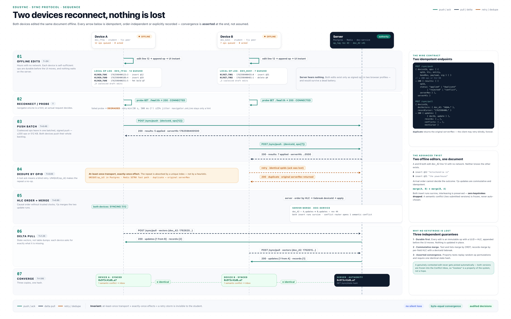
conflict row, and opens the Review Inbox. Nothing is chosen automatically, nothing is destroyed, a human decides, and the decision is recorded.CRDTs remove silent loss for text; the immutable conflict ledger removes silent loss for semantics.
| Level | Situation | Strategy | Loss risk |
|---|---|---|---|
| L0 | values identical | no-op | none |
| L1 | collaborative text / lists | Yjs CRDT merge (commutative) | none |
| L2 | independent scalar fields of one record | per-field HLC last-writer + deviceId tiebreak; both values retained in history | none |
| L3 | domain policy (grades → instructor wins; deadlines → server clock; enrolment → server wins) | policy merge, recorded | none |
| L4 | genuinely contested (two submitted versions, conflicting annotations) | freeze both → Conflict Inbox → human decision | none — nothing discarded |
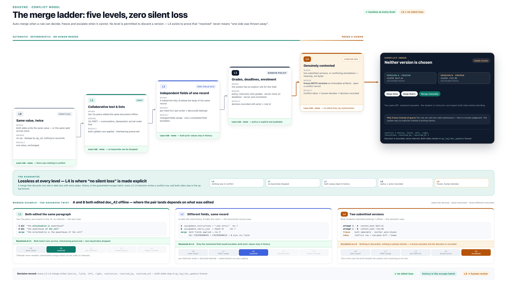
submissionId is generated once, on first submit intent, and persisted with the draft; every retry reuses it.UNIQUE(assignment_id, student_id, attempt_no) and UNIQUE(idempotency_key). The first request wins; replays return 200 with the same attempt, not 409, so clients can retry forever.content_hash detects "same content, new submission id" and files it as a revision of the same attempt.client_submitted_at and server_received_at; deadline policy is evaluated server-side with a bounded offline grace window, and both timestamps are visible to the instructor — no silent penalty.{ciphertext, iv, keyId, nonce, validFrom, validUntil, sig} signed by the server's Ed25519 key, content key wrapped per student+session; the device verifies the signature offline and refuses to open outside the window.serverTimeAtIssue; the device anchors the countdown to a monotonic timer. Wall-clock edits, timezone changes and reboots are detected and logged.hᵢ = SHA-256(hᵢ₋₁ ‖ eventᵢ) and signed with the device key; the log is encrypted at rest.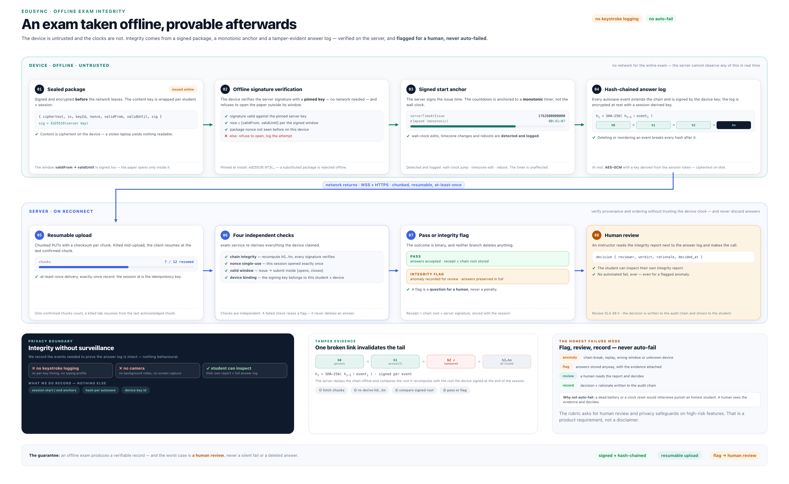
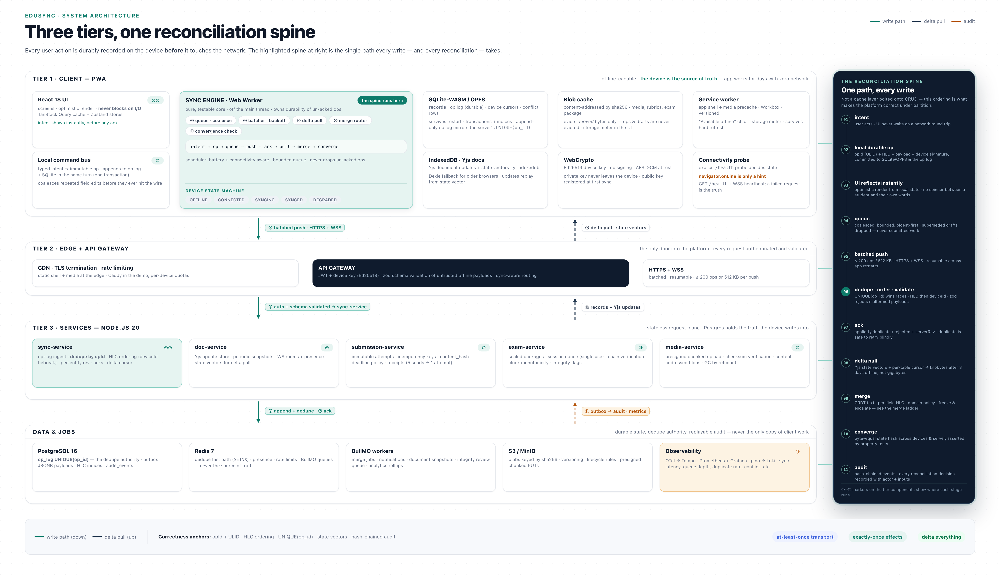
navigator.onLine).sync-service (op ingest, dedupe, HLC ordering, revisions, acks) · doc-service (Yjs update journal, snapshots, WS rooms, presence) · submission-service (immutable attempts, idempotency, content hash, deadline policy) · exam-service (sealed packages, session tokens, nonce single-use, chain verification, integrity flags) · media-service (presigned chunked uploads, checksum verification, content-addressed blobs).op_log with UNIQUE(op_id), JSONB payloads, transactional outbox), Redis 7 (dedupe fast path, presence, rate limits, queues), BullMQ workers (snapshots, merges, notifications, integrity review), S3/MinIO (blobs keyed by SHA-256), OpenTelemetry → Prometheus/Grafana/Tempo/Loki.intent → durable local op → UI reflects instantly → queue → batched push →
server dedupe (UNIQUE op_id) + HLC order + validation → ack(serverRev) →
delta pull (state vectors) → merge (ladder) → converge → auditThis spine — not the CRUD endpoints — is the actual product. Everything else exists to protect it.
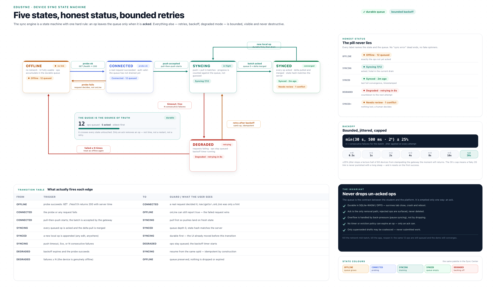
States are surfaced honestly: Offline · 12 queued, Syncing 7/12, Synced · 2m ago, Degraded · retrying in 8s, Needs review · 1 conflict. The invariant: un-acked ops are never dropped — not on failure, not on restart, not on eviction (only derived caches are evictable).
users · devices(user, pubkey) · courses · lessons · lesson_media · enrollments
assignments(rubric, due_at) · submissions(attempt_no, status, content_hash,
client_submitted_at, server_received_at, idempotency_key) · submission_files
exams · exam_packages(sig, nonce, window) · exam_sessions · exam_events(hash chain)
documents(snapshot_vector) · doc_updates(hlc, seq)
op_log(op_id PK, device_id, hlc, entity, type, payload, base_rev, server_rev, sig)
device_cursors(state vectors) · conflicts(left, right, resolution) · audit_events(hash chain)
blobs(sha256 PK, size, mime, uri, refcount) · outbox(transactional → queue)| Layer | Choice | Why this, not something else |
|---|---|---|
| UI | React 18 + TypeScript + Vite | Brief alignment; smallest cold start on low-end devices |
| Styling | Tailwind + Radix | Accessible dialogs/menus — the rubric explicitly rewards accessibility |
| Server state | TanStack Query | Stale-while-revalidate is already the right mental model for cached reads |
| UI state | Zustand | Sync-engine events map cleanly without provider trees |
| Local records | SQLite-WASM on OPFS (fallback Dexie/IndexedDB) | Real SQL, transactions, indices locally; survives restarts |
| Local documents | Yjs + y-indexeddb + y-websocket | Proven CRDT, tiny updates, offline merge by construction |
| Offline shell | Workbox service worker | Versioned precache for app shell + media |
| Sync engine | TypeScript in a Web Worker | Keeps batching/backoff off the main thread; pure core is unit- and property-testable |
| Crypto | WebCrypto (Ed25519; libsodium fallback) | Device keys + local encryption with no native deps |
| Runtime | Node.js 20 LTS | Brief alignment; one language; ws + Fastify are fast enough |
| API | Fastify + zod | Schema-first validation is the guardrail for untrusted offline payloads |
| Realtime | ws + y-protocols | Binary Yjs updates; no socket.io framing overhead |
| DB access | Drizzle ORM | Typed SQL; unique indexes are visible and explicit (dedupe depends on them) |
| Primary DB | PostgreSQL 16 | UNIQUE(op_id), JSONB, outbox, HLC indices — the correctness anchor |
| Cache/queue | Redis 7 + BullMQ | Dedupe fast path, presence, rate limits, retryable jobs |
| Blobs | MinIO (S3 API) | Local/production parity, presigned chunked PUTs, content-addressed keys |
| Packaging | Docker Compose (+ Caddy) | Brief alignment; one-command dev loop and LAN HTTPS demos |
| Observability | OpenTelemetry → Prometheus, Grafana, Tempo, Loki, pino | The rubric demands evidence; metrics are evidence |
| Testing | Vitest, Playwright (CDP offline + throttling), k6, chaos harness, convergence property tests | Proves convergence and duplicate-prevention instead of claiming them |
Deliberate rejections (say these out loud — they signal judgment): Automerge (better history, heavier payloads — Yjs wins on 2G) · CouchDB/PouchDB replication (replicates documents, pushes conflict semantics to the wrong layer) · server-authoritative CRUD with an "offline cache" (this is precisely the bug the brief is testing for) · per-record vector clocks (metadata blow-up; HLC + doc state vectors suffice) · Firebase (offline exists, but exam integrity and audit requirements need our own server).
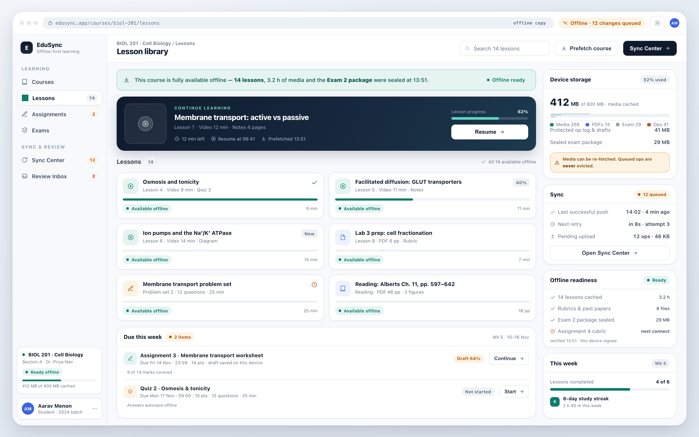
Cached lessons carry an "Available offline" chip; the storage meter makes readiness concrete; the status pill states the truth (Offline · 12 changes queued) instead of pretending.
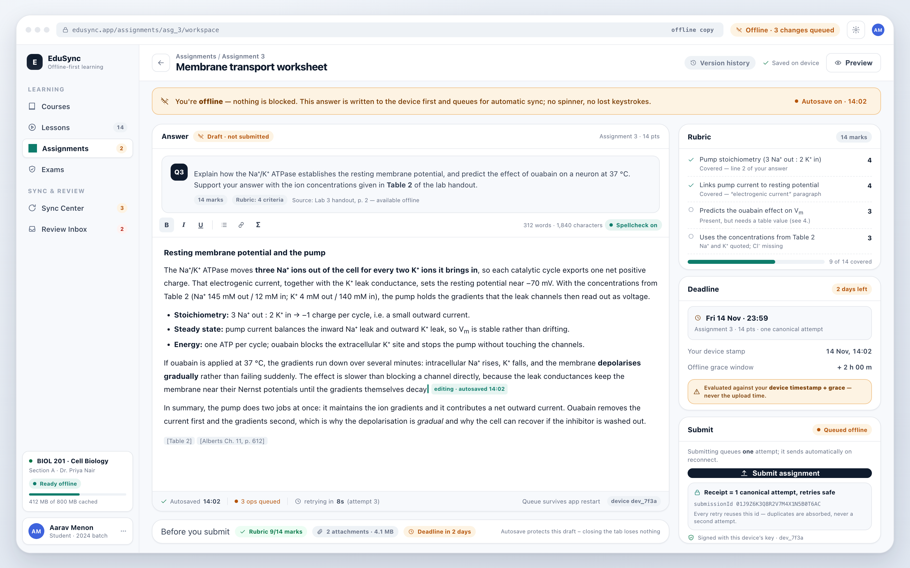
Autosave is local and instant (Autosaved 14:02 · 3 ops queued · retrying in 8s). Submit shows a receipt tied to one canonical attempt, so students know retries are safe.
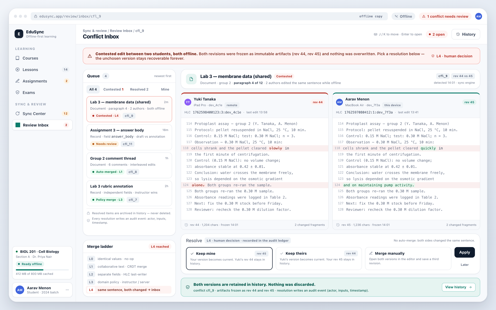
A two-pane diff with author, device and HLC per side; three explicit actions. Both versions stay in history — the "no silent loss" invariant, rendered as UI.
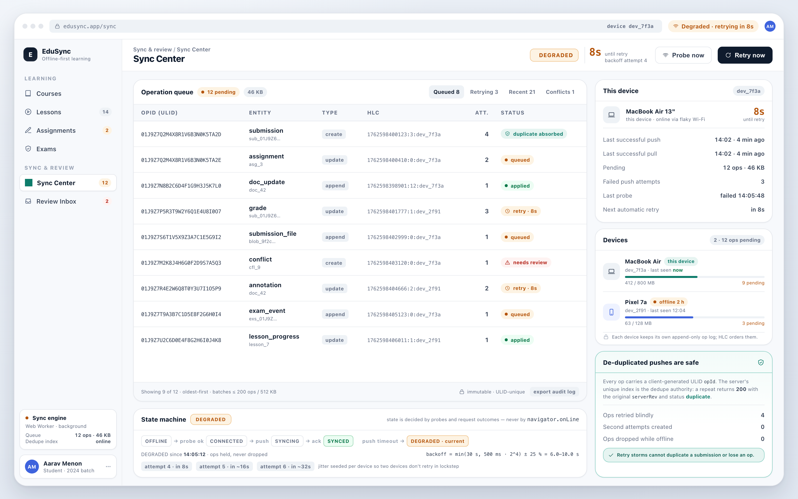
Every queued op, its attempt count and backoff, devices in play, storage used, and one "Retry now". Distributed-systems state made legible.
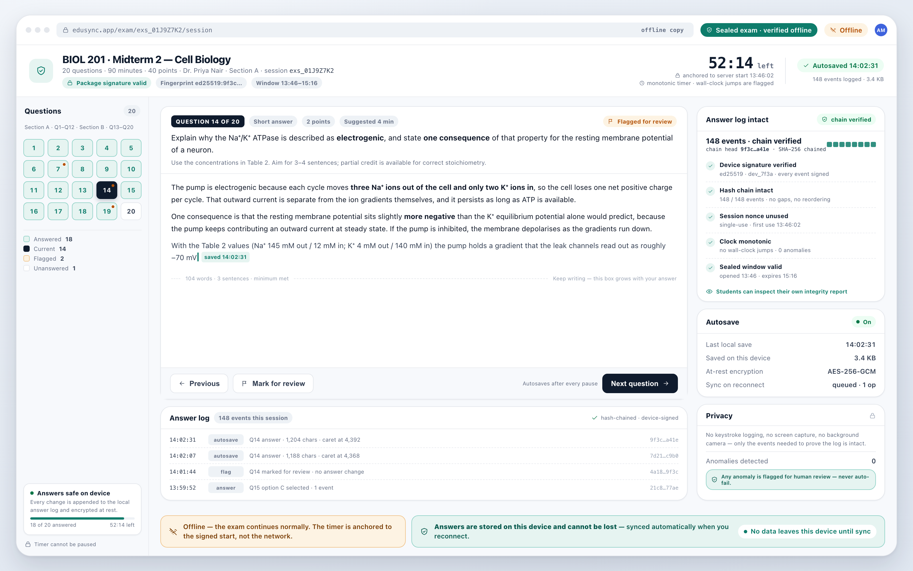
Sealed package verified offline; countdown anchored to a signed server start; answer log integrity chain (148 events · chain head 9f3c…); explicit reassurance that answers cannot be lost.
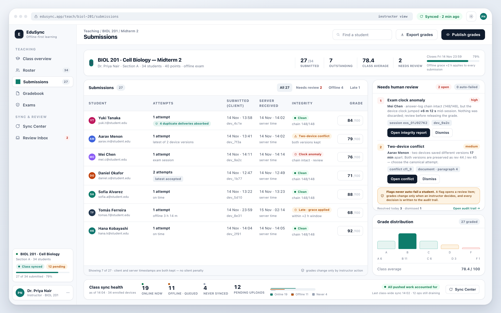
Attempt counts expose absorbed duplicates; client-vs-server timestamps are shown side by side; integrity anomalies land in a human review queue, consistent with the rubric's demand for human review on high-risk features.
Invariants turned into tests
| Invariant | Test |
|---|---|
| Convergence | Random permutations of the same op set across 3 replicas → identical state hash |
| No silent loss | Every acknowledged op appears in final state or in a conflict row (never neither) |
| Exactly-once submission | 50 concurrent submits with the same submissionId → 1 attempt, 49 duplicate results |
| Durable queue | Kill the app with N pending ops → restart → all N eventually acknowledged |
| Exam integrity | Tamper with the answer log or replay a nonce → flagged, answers preserved, no auto-fail |
| Delta efficiency | 3-day disconnect → reconnect payload measured in KB (report the number) |
Demo script (7 min): load course online (watch prefetch) → wifi off → read lesson, write and submit assignment → kill and reopen the app (work persists) → co-edit one document from two devices offline → submit the same assignment twice → wifi on → batches drain, state converges, Conflict Inbox appears for the genuinely contested edit → resolve it, show both versions in history → Sync Center + Grafana metrics → offline exam with tamper test → state limitations.
Honest limitations: one course / two roles; integrity-focused exam monitoring (no proctoring); manual conflict resolution (policy engine is the follow-on); single-node Postgres (no HA claim); media GC is ref-counted but not production-hardened; accessibility verified on core flows only.
| Hours | Milestone | Exit criterion |
|---|---|---|
| 0–6 | Monorepo, docker compose, Postgres/Redis/MinIO, auth, seed course | app runs, login works |
| 6–16 | Local persistence + read path: SQLite-WASM adapter, op log, prefetch, service worker | fully usable with the network off |
| 16–26 | Sync engine: push/pull, HLC, dedupe index, backoff, state machine, Sync Center | queue survives restart; reconnect drains |
| 26–34 | Assignments + submissions: drafts, idempotent attempts, receipts, deadline policy | 5 submits → 1 attempt, proven by test |
| 34–42 | CRDT docs: rooms, presence, offline co-edit, conflict ledger + inbox | two offline editors converge byte-identically |
| 42–46 | Exam: sealed package, monotonic timer, hash chain, verification + flags | tamper test flags, clean test passes |
| 46–48 | Chaos test, convergence property suite, metrics, demo dry-run, README | rubric evidence collected |
| File | What it is |
|---|---|
| �0� | Full engineering specification (protocol, data model, component responsibilities) |
| �0� | One-slide executive summary |
| �0� | Three-tier architecture + reconciliation spine |
| �0� | Two offline devices reconnecting; push/dedupe/merge/pull/converge |
| �0� | L0–L4 merge ladder ending in the Conflict Inbox |
| �0� | Device sync states, backoff, never-drop guarantee |
| �0� | Sealed package → local chain → server verify → human review |
| �0� | Six product screens (library, assignment, conflict inbox, sync center, exam, instructor) |
| �0� | HTML sources for every render; re-render with �0� |